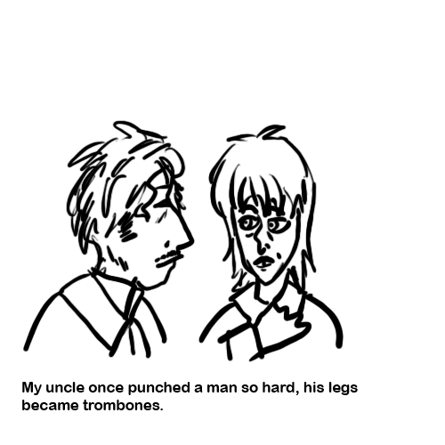
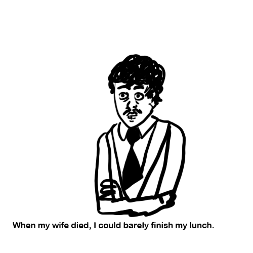
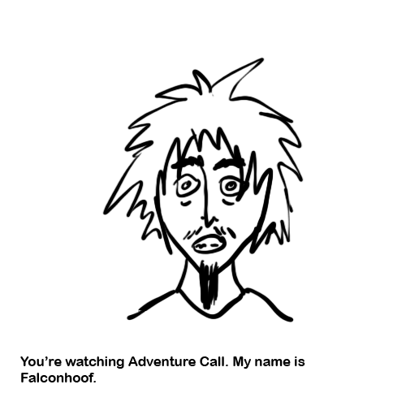
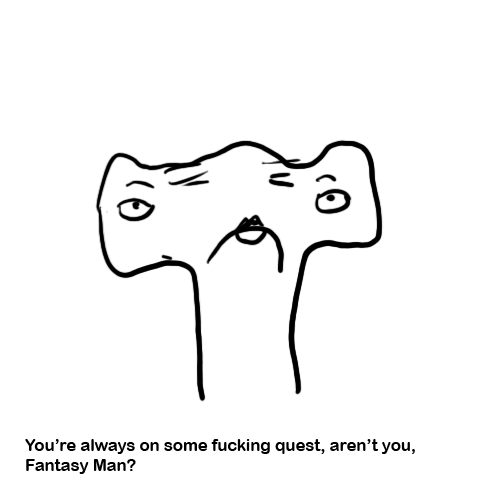
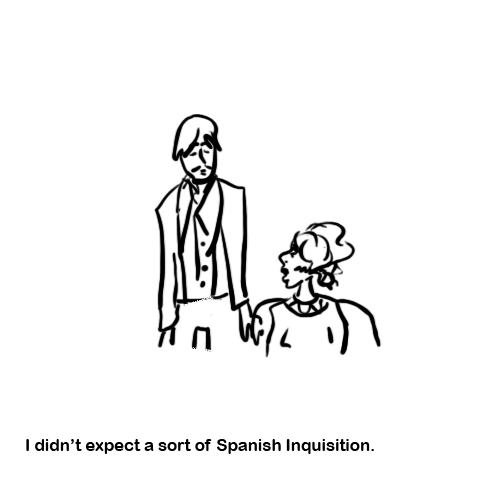
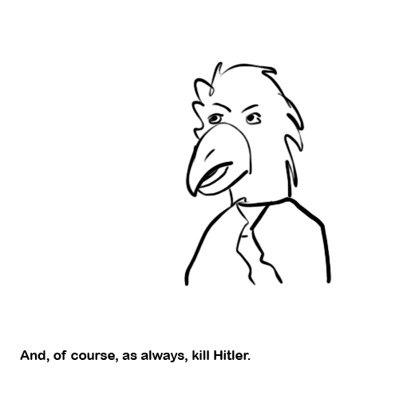

I am an avid fan of British TV comedy programs. As someone who's in the prime of their life, I spend a truly pathetic amount of my free time watching old British television shows and seeking out new ones. The problem is I often find that I have no one to talk about them with. Therefore, I am creating this blog of sorts that no one asked for so that I can just spew my opinions on these TV gems. So here it is, the definitive ranking of my favorite British TV shows -- sorry, I mean my "favourite telly programmes from ol' Blighty."
THE MIGHTY BOOSH
This has got to be my all-time favorite, but that might just be because it was the first British comedy I'd ever seen. My cousin told me to watch it when I was in high school, and I was totally mesmerized. It's so goddamn strange. It revolves around the surreal adventures of happy-go-lucky wannabe rockstar Vince Noir and melancholy jazz maverick Howard Moon. In the first season, they work at a zoo and Vince has the ability to talk to animals. In the second season, they live in a flat in East London with new roommates Naboo, the shaman who often uses his magic to help them get out of their predicaments, and his familiar Bollo who is a gorilla that used to be at the zoo. The zoo is never acknowledged again. In the third season, they work at Naboo's curio shop. The Mighty Boosh is the perfect blend of bizarreness, music, and mid-2000s British pop culture references. I tried to make my friends watch it in high school and they hated it and told me we can never watch it again. My college friends appreciate it a little more.
GARTH MARENGHI'S DARKPLACE
I just discovered this show a couple of weeks ago but, oh my God, it's one of the greatest things I've ever seen in my life. First of all, it's a show within a show. It's a fictional retrospective from 2004 put on by the fictional horror author Garth Marenghi, where he and several of the actors discuss his supernatural medical drama from the 1980s called Darkplace. So, it's a fake documentary about a fake TV show. What I like most about it is that it's completely over the top. Everyday hospital scenarios always end in gunfights, spontaneous combustion, and/or demonic possession. I put it on at an intimate get-together sometime at the end of August having never seen it before, but everyone there was an instant fan. The crime is that this show was cancelled after one season, meaning there are only six episodes in existence. I'm delaying watching the final three because I don't want it to be over.
LIMMY'S SHOW
Limmy's Show was a bit of a random find. I had seen a video online when I was 14 or 15 of a man with a heavy Scottish accent asking, "What's heavier, a kilogramme of steel or a kilogramme of feathers?" His answer was obviously steel, because steel is heavier than feathers. The rest of the bit is his friends very patiently trying to explain to him that they're the same weight and him still not getting it. I quoted this all the time, and one day I bit the bullet and finally decided to figure out where the video came from. Little did I know I would stumble onto the one of the greatest sketch shows I'd ever seen. Every bit features Limmy, usually critiquing something about society or portraying some miserable person. I think it's the only Scottish show I've seen, and the accents only add to the already great skits. Limmy is an active Twitch streamer and Twitter user, so every so often he will pop up in a meme.
NOEL FIELDING'S LUXURY COMEDY
The other shows I've listed have been odd. Without a shadow of a doubt, they're all pretty strange. Noel Fielding's Luxury Comedy is incomprehensible. It's so alien, it feels like television entertainment made for another species. I can't even tell you what the plot or concept is, it's just a show of weird things happening. There's Noel Fielding of The Mighty Boosh fame as a version of himself, a man who's half anteater, a European art-funk musician, and a cyborg copy of Andy Warhol. Here is a list of things I don't understand about the production of this show:
- How a human being thought to make it
- How any production company agreed to make his vision a reality
- How a broadcasting corporation as big as the BBC aired it to the entire nation
- Why anyone watched it
It's not my favorite, just because it is a little too unhinged for me. However, I am so glad we live in a world where something as insane as this is allowed to see the light of day.
MONTY PYTHON'S FLYING CIRCUS
An absolute classic. The British comedy to define all British comedies. Beginning in 1969, Monty Python's Flying Circus was a comedy show that just barely got greenlit by the BBC and sought to make their humor hard to define by subverting all the typical aspects of sketch comedy. They never ended a sketch on a punchline, because they thought that being predictable would spoil the comedy of it all. Instead, they had often surreal and nonsensical segues linking sketches together. Some of the references are a little too British or a little too early 1970s for me to understand, but despite being over 50 years old it still gets me good with just how odd it is.
DANGER 5
Okay, this one is kind of cheating because it's Australian. However, it's unignorably good and fits in so well with the other shows. It's a campy reimagining of World War II in a 1960s cinemascape. Danger 5 consists of a team of five special operatives from different Allied nations. There's Tucker the Australian, Ilsa the Russian, Jackson the American, Claire the Brit, and Pierre the European of indeterminate origin. At the beginning of every episode, their leader Colonel Chestbridge, who is a man with an eagle's head, briefs them about what evil scheme the Axis powers have been up and gives them their mission. And, as always, their goal is to kill Hitler.